A Apple foi fundada por Steve Wozniak, Steve Jobs e Ronald Wayne com o nome de Apple Computers incorporated, em 1976, na Califórnia. e sediada em Cupertino, a Apple desenvolve, vende e oferece suporte a uma série de computadores pessoais, reprodutores de mídia portáteis, software e hardware. Entre os produtos mais conhecidos da empresa estão a linha de computadores Mac, seu sistema operacional Mac OS X e a linha iPod de reprodutores de mídia portáteis. Para o iPod e seu programa, o iTunes, a Apple vende audiobooks, filmes, jogos, música, programas televisivos e videoclipes na sua iTunes Store, recentemente entrou no ramo de celulares com a criação do iPhone.
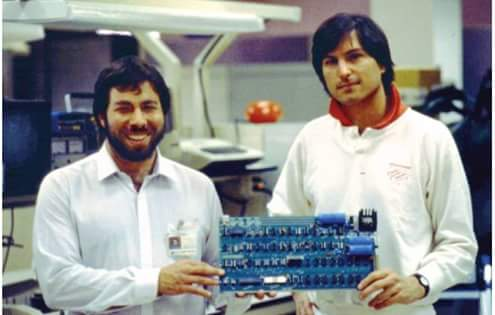 esses sao os dois steves fundadores
O Apple I foi o primeiro produto da Apple, exibido em abril de 1976 no Homebrew Computer Club em Palo Alto, Califórnia. Foi posto à venda em julho de 1976 ao preço de US$ 666,66, alegadamente porque Wozniak gostava de repetir números .Cerca de 200 unidades foram produzidas. Diferentemente de outros computadores feitos por hobbyistas nessa época, os quais eram vendidos sob forma de kits, o Apple I era uma placa de circuito impresso totalmente montada, contendo cerca de 30 chips. Toda via, para se chegar a um computador que funcionasse, os usuários tinham de acrescentar um gabinete, fonte de energia, teclado e monitor. Uma placa de expansão opcional, contendo uma interface para cassetes, utilizados no armazenamento dos dados e programas, foi lançada posteriormente ao custo de US$ 75.O Apple I é por vezes creditado como o primeiro computador pessoal a ser vendido totalmente montado.
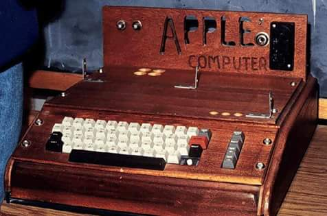
Apple II foi um modelo de computador fabricado pela Apple Inc. no final da década de 1970. O primeiro Apple II foi vendido em 10 de Junho de 1977, equipado com um processador MOS Technology 6502 com um clock de 1 MHz, 4 kB de memória RAM, um interface para fitas cassetes de áudio e uma ROM que incluía um interpretador de BASIC. O controlador de vídeo apresentava 24 linhas com 40 colunas de carateres (apenas letras maiúsculas), com saída NTSC para um monitor ou, através de um modulador RF, para uma televisão.
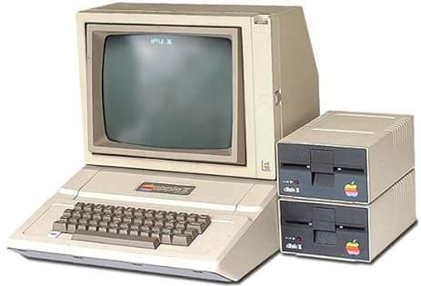
O Lisa foi um computador pessoal (PC) revolucionário lançado pela Apple Computer em 1983. Foi o primeiro PC a ter um mouse e uma interface gráfica. Essa interface foi inspirada nas estações de trabalho Xerox. A ideia por trás do Lisa era tornar os computadores mais fáceis de usar, aumentando assim a produtividade. O projeto Lisa começou em 1978 em um computador poderoso com uma interface gráfica do utilizador (GUI) alvejado em relação aos clientes empresariais. Steve Jobs, co-fundador da Apple participou de seu desenvolvimento até 1982,quando foi forçado a abandoná-lo juntando-se ao projeto Macintosh. A origem do nome Lisa vem do nome da filha de Jobs e o acrônimo Local Integrated Software Architecture foi inventado mais tarde para justificar o nome. Desde o nascimento da primeira filha de Jobs (nascida em 1978) com o nome Lisa Nicole Brennan, foi inferido que o nome tinha também uma associação pessoal e, talvez, que a sigla havia sido inventada mais tarde para ajustar o nome.
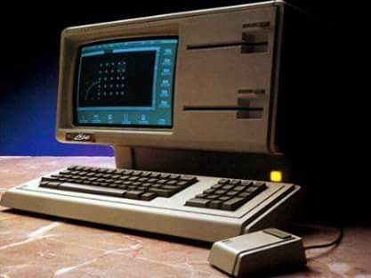
O projeto Macintosh começou a ser desenvolvido no princípio de 1979 com Jef Raskin, que imaginou um computador fácil de utilizar e barato para o consumidor comum. Em Setembro do mesmo ano, Jef Raskin foi autorizado a oficialmente lançar o projeto e começou a procurar um engenheiro capaz de construir o primeiro protótipo. O Macintosh foi lançado em 24 de janeiro de 1984, com um preço de US$2495. Vinha equipado com 128 KB de memória (por isso é conhecido hoje como Macintosh 128k, para diferenciá-lo de modelos posteriores, também chamados Macintosh) e rodava com o Sistema Operacional System 1, que mais tarde, já na versão 7.6, seria chamado de Mac OS. Apesar de uma acolhida entusiástica, ele era radical demais para alguns: como a máquina era construída em torno da interface gráfica, todos os programas em linha de comandos existentes tiveram que ser completamente adaptados. Isso contrariou a maior parte dos desenvolvedores de software, sendo a causa principal da falta de programas para o Macintosh no início.
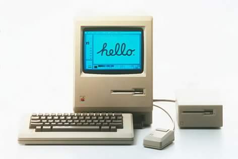
Steve Jobs apresentou o primeiro iPod em 23 de outubro de 2001. Na época, o ex-presidente da Apple disse que mais de 1 mil músicas com qualidade de CD poderiam ser guardadas no ultra-portátil tocador, projetado para caber no bolso. “Com o iPod, a Apple inventou uma nova categoria de tocador que permite colocar toda sua coleção no bolso para ouvir em qualquer lugar. Ouvir música nunca mais será igual”, disse Jobs há 10 anos. o primeiro modelo de iPod, na época compatível apenas com computadores Macintosh, tinha capacidade de 5 GB e chegou às lojas dos Estados Unidos em 10 de novembro por US$ 400. Hoje, a Apple vende quatro modelos de iPods que custam a partir de US$ 50 e tem até 160 GB de memória .Antes do iPod, nenhum outro tocador de mp3 tinha se popularizado. O tocador da Apple foi o catalisador da música digital. Nesses 10 anos, mais de 300 milhões de iPods foram vendidos. Segundo Tim Cook, novo presidente da companhia, a Sony levou 40 anos para comercializar 220 mil Walkmans. Apesar das especulações de que a Apple iria interromper a fabricação de iPods, Cook disse que mais de 45 milhões de tocadores foram comprados entre 2010 e 2011
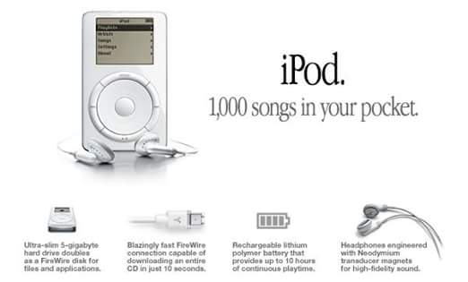
Desenvolvimento do iPhone começou quando Steve Jobs, CEO de Apple Inc., teve a ideia de usar uma tela multi-touch para interagir com um computador de uma maneira em que ele pode digitar diretamente no display, essencialmente, na remoção física de teclado e mouse. Jobs recrutou um grupo de engenheiros da Apple para investigar a ideia como um projeto paralelo. Quando Jobs revista o protótipo e sua interface com o usuário, ele teve uma segunda ideia de implementar a tecnologia em um celular. O iPhone original foi introduzido por Steve Jobs em 9 de janeiro de 2007, em uma palestra na Macworld Conference & Expo, realizada em Moscone West, em San Francisco, Califórnia. Em seu discurso, Jobs disse: "Eu estou ansioso por e ste momento há dois anos e meio" e que "hoje, a Apple vai reinventar o telefone". Jobs apresentou o iPhone como uma combin ação de três dispositivos: um iPod widescreen com controles sensíveis ao toque, um telefone celular revolucionário e um comunicador de internet inovador.O iPhone foi lançado em 29 de junho de 2007 nos Estados Unidos, onde centenas de pessoas formaram filas fora das Apple Stores e lojas da AT&T dias antes de os dispositivos serem lançados. Para evitar uma repetição do fato que aconteceu no lançamento do PlayStation 3, que causou assaltos e até mesmo um tiro, policiais foram contratados para proteger as lojas durante a noite. Mais tarde, foi disponibilizado no Reino Unido, França e Alemanha em novembro de 2007, e a República da Irlanda e Áustria, no outono de 2008.
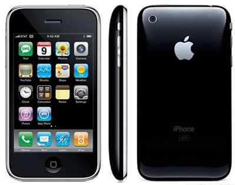
Steve Jobs anunciou o lançamento oficial na WWDC 08, custando nos EUA cerca de 199 dólares (preço do modelo de 8 GB) e 299 dólares (preço do modelo 16 GB). Apesar de poucas, as diferenças entre o modelo 3G e o 2G (primeiro iPhone) são muito significativas, já que ouve a inclusão do, 3G (um aumento significativo na velocidade de transmissão de dados), do A-GPS (GPS unido a localização via antenas de transmissão) e a disponibilidade de escolha entre as cores preto e branco a cor branca está presente apenas no modelo 16 GB). Hoje, o iPhone 3G se encontra fora de linha e não é mais fabricado e comercializado. Estão a venda no site da Apple, o iPhone SE e modelos superiores.
O iPhone 3GS foi a terceira geração do iPhone concebidos e comercializados pela Apple Inc. Foi introduzido em 8 de junho de 2009 na WWDC 2009, realizada no Moscone Center, San Francisco. Suas características consistem principalmente de rápida execução, uma câmera com maior resolução e capacidade de vídeo, controle de voz, e suporte para HSDPA de 7,2 Mbps. Foi lançado nos Estados Unidos, Canadá e seis países europeus em 19 de junho de 2009, na Austrália e no Japão em 26 de junho, e internacionalmente em julho e agosto de 2009. Após o anúncio do 3GS, o 3G foi disponibilizado a um preço reduzido O iPhone 3GS foi precedido pelo iPhone 3G e sucedido pelo iPhone 4.
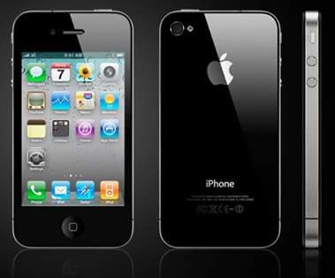
A diferença mais notável entre o iPhone 4 e seus predecessores é o novo design (material foi modificado passando de vidro Corning Gorila Glass para metal inoxidável com cantos de vidro na traseira do 5/5s e plástico policarbonáto do 3G/3GS no 5c) , mas com a mesma base que foi usada em 2010 pelo iPhone 4), que incorpora um aço inoxidável que funciona como antena do aparelho. Ele usa o processador Apple A4 e tem 512 MB de eDRAM, o dobro do seu antecessor e quatro maior do que o iPhone original. Sua tela de 3.5 polegadas (89 mm) LED backlit de cristal líquido é comercializado com o nome de "Retina Display" possui a resolução de 960 por 640 pixels.
O iPhone 4 apresenta uma estrutura remodelada, desenhado por Jonathan Ive. Mais concretamente, as protuberâncias do painel traseiro, assim como a banda entre a frente e a traseira foram substituídos por superfícies achatadas. O redesenho reflete o utilitarismo e a uniformidade dos produtos Apple Inc. já existentes, tais como o iPad e o iMac.
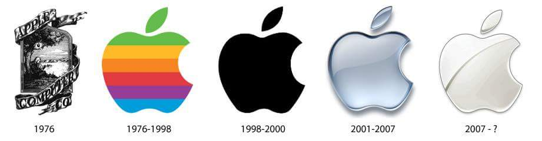
O iPad foi apresentado como um dispositivo situado a meio caminho entre um MacBook e um iPhone. O dispositivo utiliza o mesmo sistema operacional do iPhone, o iOS. A recepção inicial do iPad foi bastante misturada, com muitos entusiastas ficando contra o aparelho devido ao que percebem como limitações e com outros tantos demonstrando grande empolgação com facilidade de interação que a interface demonstra.
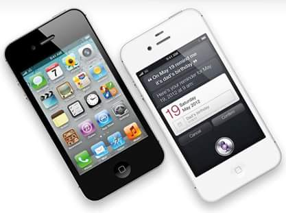
O iPhone 4S é um smartphone da Apple Inc., anunciado no dia 4 de outubro de 2011, um dia antes do falecimento do co-fundador, presidente e diretor executivo da Apple Inc, Steve Jobs, no evento da marca "Let's Talk iPhone".[1] O modelo foi lançado no dia 14 do mesmo mês e foi o primeiro da empresa a ser apresentado por Tim Cook, no lugar de Steve Jobs. Sucessor do iPhone 4, o modelo usa um processador Apple A5 Dual-Core de 1 GHZ, com clock de 800MHz.[2] Junto ao iPhone 4S, a Apple também lançou a quinta versão do sistema operacional iOS, que trazia pela primeira vez a assistente de voz Siri, assim como o serviço de armazenamento em nuvem, o iCloud. O iPhone 4S foi uma inovação para a Apple, em termos de telefonia celular. Apesar da sua tela de 3,5 polegadas e design semelhante ao do modelo anterior, o novo iPhone trouxe várias melhorias. Começando com o seu processador Apple A5 Dual-Core de 1GHz com o surpreendente pico de 800MHz. Houve também o upgrade da câmera, que passa a contar com 8 Megapixels, nova lente e leve aumento de abertura, o que passou a facilitar ainda mais a entrada de luz, aumentando o desempenho da câmera em ambientes de baixa luminosidade. A nova antena dual GSM também foi um avanço para a marca e modelo, no sistema uma antena recebe o sinal Wifi e 3G e a outra emite o sinal dos mesmos, melhorando assim a velocidade de ambos, numa qualidade 3G+ (3G Plus) A produção deste modelo foi encerrada em Setembro de 2014, juntamente com o lendário iPod Classic (o primeiro da linha), sendo assim, descontinuado o Conector dock e encerrando a "era Jobs". O iPhone 4s de 8GB foi descontinuado em 31 de março de 2015 no Brasil.[3] Em 8 de junho de 2015, foi anunciado na WWDC que o iPhone 4S será o primeiro iPhone da história a receber cinco versões do sistema operacional, sendo estes o iOS 5, 6, 7, 8 e 9
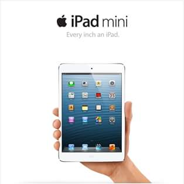
Desde a época de Steve Jobs sob comando da Apple, já especulava-se uma versão menor do tablet, que foi totalmente descartada pelo co-fundador.[4] Depois de um recesso sobre o possível lançamento do produto, foi oficialmente anunciado na Apple Special Event October 2012. Também gerou certa polêmica o fato do iPad mini ter sido lançado sem a tela Retina, que sempre foi um diferencial da empresa ao divulgar os seus produtos. A explicação foi que sua bateria não poderia suportar a resolução de tela maior da fabricada. Em 22 de outubro de 2013, foi anunciado o iPad mini 2, ao qual incluiu a tela Retina, além de igualar seu hardware, assim então seu desempenho, ao iPad Air e iPhone 5s. Já a terceira geração do tablet lançada em 22 de outubro de 2014, o iPad mini 3, trouxe apenas o recurso Touch ID de diferença ao seu antecessor, mantendo o mesmo design e as mesmas configurações de hardware.
iPad mini é o primeiro tablet alternativo ao iPad desenvolvido pela Apple, apresentada pela primeira vez no dia 23 de outubro de 2012 no Apple Special Event October 2012, o iPad mini de primeira geração. Possui as mesmas características físicas da sua versão maior.
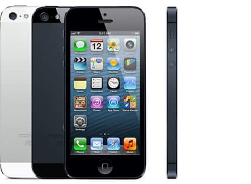
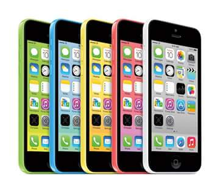
O iPhone 5c usava o mesmo hardware do iPhone 5, com algumas pequenas alterações. o iPhone 5c usava um sistema em chip (SoC), chamado de a Apple A6, o mesmo chip que impulsionou o iPhone 5. O SoC compreende um processador dual-core de 1,3 GHz, 1 GB de RAM e um PowerVR tri-core SGX543MP3 rodando a 266 MHz e novas antenas LTE que cobriam mais bandas LTE do que qualquer outro smartphone de acordo com a Apple. O dispositivo é constituído por um monobloco com revestimento rígido corpo de policarbonato com uma moldura de aço reforçado, que também atua como uma antena. O iPhone 5c foi redesenhado usando caixa de policarbonato de alta qualidade, que é reforçada por uma banda de aço. No entanto, devido ao material de mudanças no projeto, o telefone pesa 132 gramas, o que é 20 gramas mais pesado que ambos os iPhones 5 e 5S, mas ainda mais leve do que os modelos de iPhone mais antigos como 4s e 4. O design do iPhone 5C também é consideravelmente mais fino e é muito semelhante ao desenho dos modelos iPod Touch (5ª geração), que também está disponível em uma variedade de cores, mas em um acabamento de revestimento diferente. Outras pequenas modificações incluem um conjunto de câmera diferente e o desenho da chave mudo/campainha. Este iPhone recebeu críticas positivas por seu design afirmando que é o iPhone mais durável. Ao contrário dos modelos seguintes, o iPhone 5c é oferecido em cinco cores (azul, verde, amarelo, rosa e branco).
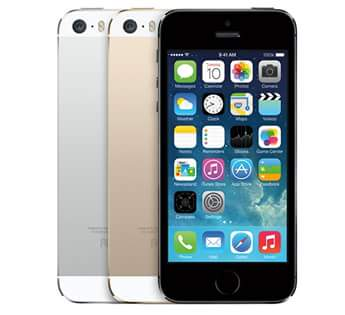
diferente dos antigos modelos , o iphone 5s inaugurou o touch id ( reconhecimento de impressao digital ), uma camera mais avancada que possibilitou videos em camera lenta , o primeiro smartphone com um processador com arquitetura de 64 bits e o primeiro iPhone a ter 3 cores
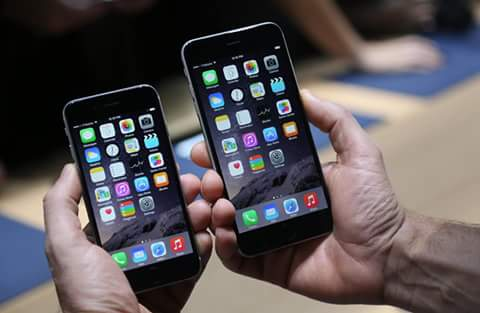
Anunciado dia 9 de setembro de 2014, o iPhone 6 e o iPhone 6 Plus foram os primeiros iPhones grandes do mercado , com telas de 4.7 e 5.5 polegadas respectivamente , o modelo maior tem uma tela full hd de 1920x1080p e o menor 1334x750p , foi a maior mudanca desde a primeira geracao do iPhone , eles foram equipados com um Chip A8 dual core com clock de 1.4GHz .
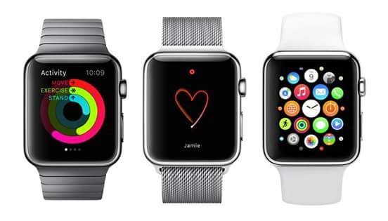
O Apple Watch (estilizado como Apple logo black.svg WATCH) é um relógio inteligente criado pela Apple Inc., anunciado em 9 de setembro de 2014. Seu lançamento ocorreu no dia 24 de abril de 2015, nos Estados Unidos. Ele possui uma tela sensível à pressão que detecta a força pressionando a tela, e uma coroa digital que pode ser usada para descer ou dar zoom e quando pressionada voltar a tela inicial. O relógio ainda tem um botão dedicado a mostrar a lista de contatos na tela. O objetivo do relógio da Apple era libertar as pessoas de seus telefones. Kevin Lynch foi provocada pela Apple para tornar a tecnologia wearable para o pulso. Ele disse: "As pessoas estão levando seus telefones com eles e olhando todo momento para a tela. As pessoas querem que o nível de engajamento. Mas como podemos fornecê-lo de uma forma que é um pouco mais humano, um pouco mais no momento em que você está com alguém? " o relógio Apple trabalha conectando via Bluetooth ao telefone e acesso a quaisquer aplicativos compatíveis relógio armazenados no dispositivo móvel processo de desenvolvimento da Apple foi realizada muito em segredo até que um artigo da Wired revelou como algumas decisões de design internas foram feitas.
O iPhone 6s é a nona geração do iPhone desenvolvida pela Apple. Foi anunciado no dia 9 de setembro de 2015, durante um evento da Apple em São Francisco, na Califórnia .O iPhone 6s é o sucessor do iPhone 6 e traz melhorias nas especificações de hardware, assim como o 3D Touch, que é uma tecnologia que permite o reconhecimento da pressão do toque na tela do dispositivo A novidade fica por melhorias no sensor de digitais chamado de Touch ID, alumínio série 7000 na construção e várias melhorias internas de câmera e hardware. Foi introduzida no iPhone 6s a nova tecnologia chamada de 3D Touch, que usa o reconhecimento de pressão na tela para permitir que diferentes ações possam ser realizadas dependendo do nível de pressão do toque do usuário. Apesar de ser similar ao Force Touch usado no MacBook e no Apple Watch, o 3D Touch é mais sensível e consegue reconhecer mais níveis de pressão de toque do que o Force Touch.O design do iPhone 6s é praticamente idêntico ao do iPhone 6. Pela primeira vez em quatro anos, a câmera traseira do iPhone agora tem 12 MP, e passou a gravar vídeos em resolução 4K. A sua câmera dianteira possui 5 MP e a tela do iPhone pode ser agora inteiramente iluminada, usando a tecnologia chamada de "Retina Flash", que durante alguns segundos ilumina o display em até 3x mais, funcionando como um grande flash para que selfies melhores sejam tiradas . O iPhone 6s possui o processador Apple A9, que segundo a Apple é 70% mais rápido que o anterior, o Apple A8.
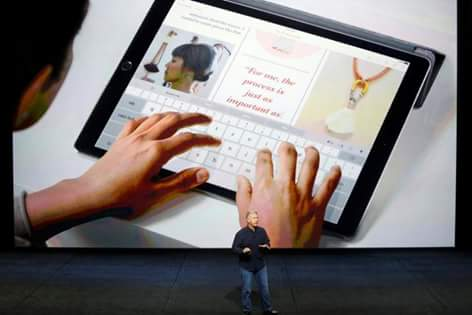
O iPad Pro foi feito para o comercio profissional , para aqueles que usam muito computadores para editar textos e videos ,ele foi equipado com uma tela de 2732x2048p de 12.9 polegadas ( a tela com maior resolucao ate agora em um produto ios) , um Chip A9x super potente de clock 2.3GHz e contava com uma camera de 8mp
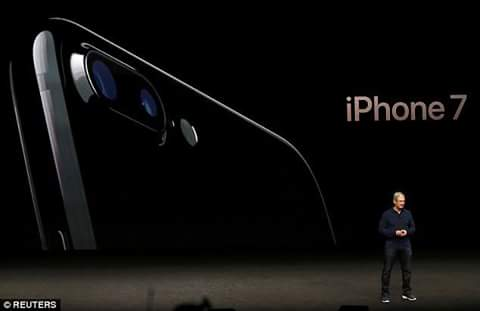
O iPhone 7 é a décima geração de smartphones da linha iPhone junto com o iPhone 7 Plus, ambos desenvolvidos pela Apple Inc. O dispositivo foi anunciado em 7 de setembro de 2016 no Bill Graham Civic Auditorium em São Francisco (Califórnia) pelo CEO da Apple, Tim Cook. É o sucessor do iPhone 6s e o produto principal da linha de iPhones atualmente. Em relação ao seu antecessor, as principais diferenças do iPhone 7 são o novo processador quad-core Apple A10 Fusion, resistência à água e poeira (com a certificação IP67), presença de auto-falantes estéreo, chegada de um sistema de estabilização óptica na câmera, além de 60% mais velocidade e 30% mais eficiência nas capturas e a ausência da entrada de fone de ouvido substituindo os EarPods pelos fones sem fio AirPods.O primeiro iPhone com 5 cores e primeira vez que um produto da apple tem duas cameras principais.
evolução da logo.